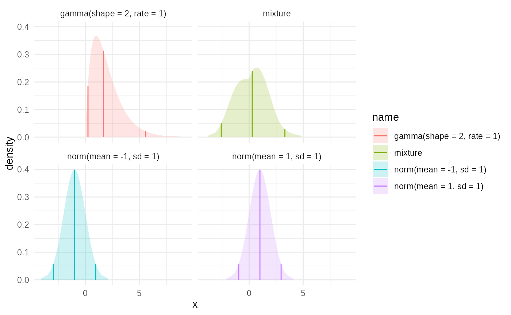

Constructs a mixture distribution from a list of component distributions
\(\text{dist}_i\) with corresponding weights \(w_i\).
The CDF \(F_{\text{mix}}\) of the mixture is a weighted sum of the component CDFs:
$$
F_{\text{mix}}(x) = \sum_{i=1}^{k} w_i \cdot F_i(x)
$$
where \(F_i\) is the CDF of the \(i\)-th component distribution and
\(\sum w_i = 1\). The implementation first evaluates the weighted CDF on a grid
of \(x\) values (including tail points defined by tail_p and potentially
knot points from empirical components). The resulting \((x, F_{\text{mix}}(x))\)
pairs are then used as input to empirical_cdf to create the final smooth or
piecewise linear dist_fns object representing the mixture distribution.
Arguments
- dists
a
dist_fn_listof distribution functions- weights
a vector of weights
- steps
the number of points that the mixture distribution is evaluated at to construct the empirical mixture
- tail_p
the support fo the tail of the distribution
- ...
Named arguments passed on to
empirical_cdfsmoothfits the empirical distribution with a pair of splines for CDF and quantile function, creating a mostly smooth density. This smoothness comes at the price of potential over-fitting and will produce small differences between
pandqfunctions such thatx=p(q(x))is no longer exactly true. Setting this to false will replace this with a piecewise linear fit that is not smooth in the density, but is exact in forward and reverse transformation.
- name
a name for the mixture
Examples
dists = c(
as.dist_fns("norm", mean=-1),
as.dist_fns("norm", mean=1),
as.dist_fns("gamma", shape=2)
)
weights = c(1,1,0.3)
mix = mixture(dists,weights)
plot(c(dists,mix))+ggplot2::facet_wrap(~name)
